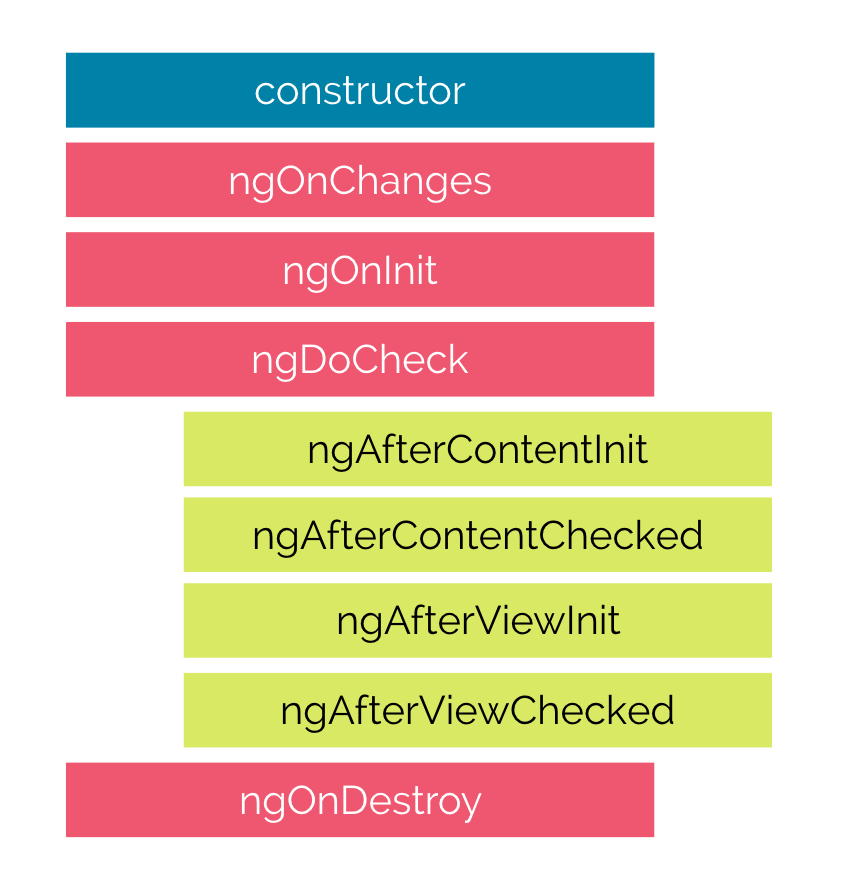

Angular
Présenté par: Youness Houdass
1. Qu'est ce que angular?

Angular est une plateforme de développement qui permet de créer des applications clientes web, il est aussi utilisé pour la création d’application mobile, notamment avec Ionic.
Angular permet de créer des applications SPA (single page application).
Le terme AngularJS désigne la version 1.x.x du framework, et les versions supérieures ou égale à 2 sont nommées simplement Angular.
Si vous connaissez AngularJS (Angular 1.x), vous pensez peut-être qu’Angular est une upgrade d’AngularJS. En réalité, Angular a été totalement réécrit par Google, ce qui en fait un nouveau framework à part entière, avec une philosophie et des concepts propres à lui.

Au travers d’Angular, Google cherche à faire table rase du passé, en remettant à plat de nombreux concepts présents dans AngularJS.
Cette stratégie a été motivée par 4 principes fondateurs :
- Augmenter les performances
- Améliorer la productivité
- S’adapter au mobile
- Embrasser les nouveaux standards du Web
Un peu d'histoire
- Angular 2: 14 September 2016
- Angular 4: 23 Mars 2017 (Pas de version 3, car toutes les bibliothèques Angular de base étaient toutes à la version v2.3.0, sauf le paquet @angular/router qui était à la v3.3.0)
- Angular 5: 1 November 2017
- Angular 6: 4 Avril 2018

Avantages
- Des performances améliorées
- Une modularité accrue / du code plus expressif
- Un respect des nouveaux standards du web
2. Angular CLI

"The CLI is a geart tool for big and very big Angular projects! It allows to focus on Angular code instead of workflow tasks."
Google nous propose un outil clé en main pour réaliser les tâches de développement les plus courantes. Ce projet est basé sur le projet Open Source ember CLI, qui a maintenant plus de trois ans. Grâce à notre Angular Cli, il est possible de :
- Créer une application from scratch via un scaffolding
- Générer des component|directive|pipe|service|class|guard|interface|enum|module
- Builder un projet
- Lancer des tests de End-to-End (E2E) ou unitaires
- Et beaucoup d'autres choses…
3. Setup du projet via Angular CLI
- npm i -g @angular/cli
- ng new my-dream-app
- ng new my-dream-app --style=less|scss
- cd my-dream-app
- ng serve
4. Ajouter bootstrap au projet
- npm i -S bootstrap@3.3.7
- Ouvrir le fichier .angular-cli.json
- Au niveau du noeud styles ajouter : ../node_modules/bootstrap/dist/css/bootstrap.min.css
5. Les selectors (composants)
-
selector: 'app-users'
<app-users></app-users> -
selector: '.app-users'
<div class="app-users"></div> -
selector: '[app-users]'
<div app-users></div>
6. Databinding
- String interpolation {{ data }}
-
Property binding [property]="data" or bind-property="data", par exemple:
<button [disabled]="isDisabled"> ...</button> -
Event Binding (event)="callback()" or on-click="callback()", par exemple:
<button (click)="onClick()"></button> - Two-way binding (Banana in the box) [(data)]
*ngIf / else condition
<p *ngIf="isVisible; else noCondition">This is true</p> <ng-template #noCondition><p>This is false<p></ng-template>
*ngFor / index
<p *ngFor="let item of items; let i = index">{{i}} - {{item.name}}</p> - Or,
<p *ngFor="let item of items; index as i">{{i}} - {{item.name}}</p>
Encapsulation
- encapsulation: ViewEncapsulation.Emulated Pas de shadow DOM, mais une émulation du Shadow DOM. C'est le comportement par défaut.
- encapsulation: ViewEncapsulation.Native Utilisation du véritable shadow DOM. Superbe sur Chrome, mais cela s'arrête là pour le moment. Ni Safari, ni Firefox ne supporte ce mécanisme.
- encapsulation: ViewEncapsulation.None Ni shadow DOM, ni aucun mécanisme d'encapsulation de style CSS.
Input/Output
- @Input
- @Output
- Quand @Input se charge de recevoir une valeur, @Output se charge, lui, d'envoyer une donnée.

Template reference variables
Les variables référence de template (ou template reference variables) permettent d’accéder à un élément DOM ou un composant Angular via une variable déclarée directement sur la balise de cet élément ou de ce composant avec la syntaxe #var ou ref-var.
Hooks (Le cycle de vie d’un Component)
Pour ceux qui ne connaissent pas le terme de cycle de vie, il s'agit simplement de la définition de toutes les étapes de la naissance du Component à sa mort.
ngOnChanges
Se lance lorsqu'Angular modifie une des propriétés du Component / directive suite à un Property Binding @Input. La méthode reçoit un object SimpleChanges contenant les valeurs courantes et précédentes. Il est lancé avant ngOnInit et à chaque fois qu'une ou plusieurs propriétés précédées de @Input change.
ngOnInit
Initialise le component / directive après qu'Angular ait valorisé les Property Binding @Input. Il n'est lancé qu'une seule fois après le premier .
ngDoCheck
Détecte et agit sur les changements qu'Angular ne peut ou ne pourra pas détecter lui même. Il permet, en outre, de vérifier les changements dans les directives additionnelement aux algorithmes classiques. Il est appelé immédiatement après ngOnChanges et ngOnInit.
ngAfterContentInit
Il se lance également après l'initialisation d'un Content (ng-content). A partir de ce moment, les propriétés initialisées par @ContentChild et @ContentChildren sont valorisées. Il n' est appelé qu'une fois après le premier ngDoCheck.
ngAfterContentChecked
Se lance après le check du Content.
ngAfterViewInit
Se lance après qu'Angular initialise la vue (template) du Component et les vues enfants. A partir de ce moment, les propriétés initialisées @ViewChild et @ViewChildren sont valorisées Il n'est appelé qu'une seule fois après ngAfterContentChecked.
ngAfterViewChecked
Se lance après le check de la vue (template)
ngOnDestroy
Se lance juste avant qu'Angular ne détruise le Component / directive. C'est l'endroit idéal pour desinscrire les Observables et détacher les évènements afin d'éviter les fuites mémoires. Il est appelé qu'une seule fois avant la destruction du Component / directive.
Directives
Les Components sont des directives à la seule différence qu'ils possèdent une fonctionnalité de templating. En TypeScript, une directive est une classe à laquelle on applique le décorateur @Directive.
Il existe deux sortes de directives :
Les directives structurelles : Elles ont pour but de modifier le DOM en ajoutant, enlevant ou replaçant un élément du DOM. Les attribute directives : Elles ont pour but de modifier l'apparence ou le comportement d'un élément.
ElementRef
App Basic Highlight Example
constructor(private elementRef: ElementRef) {}ngOnInit() { this.elementRef.nativeElement.style.backgroundColor = 'green'; }
Renderer
constructor(private elRef: ElementRef, private renderer: Renderer2) {}ngOnInit() { this.renderer.setStyle(this.elRef.nativeElement, 'backgroundColor', 'blue'); }
@HostBinding
@HostBinding('style.backgroundColor') backgroundColor;ngOnInit() { this.backgroundColor = 'blue'; }
@HostListener
@HostListener('mouseenter') mouseenter(eventData: Event) { this.backgroundColor = this.highlightColor; }
@Input
- @Input() highlightColor = 'transparent';
<p appBetterHighlight [highlightColor]="'blue'">Highlight Directive</p> - ou bien,
<p appBetterHighlight highlightColor="blue">Highlight Directive</p>
Services
"Components shouldn't fetch or save data directly and they certainly shouldn't knowingly present fake data. They should focus on presenting data and delegate data access to a service."
@Injectable
@Injectable() lets Angular know that a class can be used with the dependency injector.
Providers
@Inject
@Inject() is a manual mechanism for letting Angular know that a parameter must be injected.
ngStore
RxJS powered state management for Angular applications, inspired by Redux.
Implementations
- @ngrx/store
- ng2-redux
- @angular-redux/store...
npm i -S @ngrx/store
npm i -S @ngrx/store-devtools
@ngrx/store-devtools instruments your store letting you use a powerful time-travelling debugger.
npm i -S @ngrx/entity
@ngrx/entity provides an API to manipulate and query entity collections.
npm i -S @ngrx/router-store
Keeps the state of @angular/router in your store.
npm i -S @ngrx/effects
Isolates side effects from your UI by expressing side effects as sources of actions.
Actions
Actions describe state changes.
Reducers
Pure functions called reducers take the previous state and the next action to compute the new state.
Reducers specify how the application's state changes in response to actions sent to the store.
Remember that actions only describe what happened, but don't describe how the application's state changes.
NgRx Schematics
- ng config cli.defaultCollection @ngrx/schematics
- npm i -D @ngrx/schematics
- ng generate entity --name User --module somewhere/somewhere.module.ts
- https://github.com/ngrx/platform/tree/master/docs/
Dependencies
npm i @ngrx/{store,effects,entity,store-devtools} -S
Coveralls
Works with continuous integration servers to provide test coverage history and statistics.

Coveralls repository dashboard

Coverage of latest builds of a repo

Coverage per file for specific build

Drilldown into file coverage

Integration into PR overview screen

Passing test results to Coveralls

Setup NMA email* on any coverage drop

For each new API key NMA automatically creates an email address apikey@nmamail.net that can be used for custom notifications.
Notification on a (forged) coverage drop

Codeclimate
Automated code review for Ruby, JS, and PHP providing feedback on code quality and test coverage.

Quality overview in Codeclimate Feed

Quality metrics and test coverage per file

Code smells identified by Codeclimate

Coverage details show a missed function

Send merged LCOV data to Codeclimate

Automatically open issues for code smells

Refactoring issue created by Codeclimate

Dependency Management

Versioneye
Notification System for Software Libraries showing outdated dependencies in different supported project files.

Versioneye Project Overview

Supported Languages: Java - Ruby - Python - PHP - Node.js - JS - Objective-C - Clojure - CSS - R
Dependency details on project level

Graph with all indirect dependencies

This graph shows all the dependencies brought into the JS implementation of kata-tcg by the used testing libraries!
Gemnasium
Monitoring of project dependencies and alerts for updates and security vulnerabilities.
Dependency status overview for all repos

Outdated Jasmine test dependencies

Email with security alert

Continuous Deployment

Heroku
Build and Run Your Apps, Your Way.

Heroku instance of Juice Shop

Heroku offers a free small instance per personal application.
Application status dashboard

Heroku supports Ruby, Node.js, Python, Java, and PHP.
Application deployment history

Setting up deployment in .travis.yml

By default only a successful build of the master branch triggers a deployment.
Docker
Open platform for distributed applications for developers and sysadmins.

Autobuild Repository on Docker Hub

Activated Docker Service Hook on GitHub

The Dockerfile of Juice Shop

Collaboration

HuBoard
Lightweight Kanban Board offering instant project management for GitHub issues.

Kanban Board based on GitHub issues

DnD for priorization and process flow

Simple creation and tagging of story cards

Authorizing access to GitHub repos

Let HuBoard setup the GitHub integration

Service Hook generated by HuBoard

Bountysource
Funding platform for open-source software where users can create/collect bounties and pledge to fundraisers.

Overview of issues to place bounties on

Picking an issue to place a bounty on

Placing a 10$ bounty for a new logo

The new bounty in the Activity feed

Issue augmented with bounty information

Developer starting to work on issue

Developer claims bounty for closed issue

Approved and paid bounty for new logo
{kind=link}

Gitter
Chat. For GitHub.

The official Gitter chatroom of Juice-Shop

Disclaimer: Chatroom might appear more desolated on screenshot than in reality.
Activity sidebar populated via WebHooks

GitHub-side of the Gitter-WebHook

With granted repository access Gitter will setup its WebHook on GitHub automatically.
One final takeaway
If the services you are using offer status badges for your README.md...
... use them ...
...on every occasion ...
...because they are just cool !


Merci de votre attention!
by Youness Houdass / houdass.com
Q&A